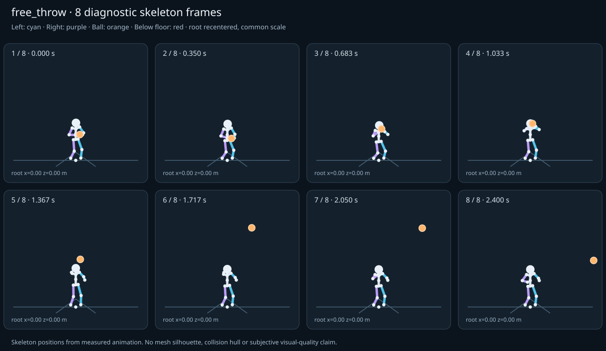

מה הוריד את הציון
- קפיצות פוזה: LeftHand בזמן 1.25 ש׳; קפיצת סיבוב שקולה 27.5969 מעלות ב־60Hz (צהוב)
- כניסה ויציאה מול המתנה: פער ב־כניסה מול המתנה; יחס חריגה 1.95 (צהוב)
כיסוי: 100%. לא כל מדד חל על כל קליפ; הסטטוס והראיות מפורטים למטה.
שמונה פריימים
תצוגת שלד אבחונית שנבנתה מהפריימים הנמדדים. צד שמאל בכחול, ימין בסגול, כדור בכתום. מיקום השורש ממורכז לצפייה; מיקומו בעולם כתוב בכל פריים.

המדדים והראיות
| מדד | מצב | ערך | ציון | סף ופרטי מדידה |
|---|---|---|---|---|
| החלקת רגליים | ירוק | 0 height ratio | 100 | {
"definition": {
"label": "החלקת רגליים",
"unit": "height ratio",
"green": 0.01,
"yellow": 0.035,
"weight": 18,
"description": "Maximum horizontal sole displacement from the first sample of each declared support window, divided by character height. Inferred support is used only when no windows were supplied."
},
"value": 0.000013,
"status": "green",
"score": 99.97,
"evidence": {
"coordinateSpace": "authored reference world (simulation-owned)",
"supportSource": "declared",
"windows": 2,
"samples": 292,
"maxDriftMeters": 0.000022,
"p95SpeedMetersPerSecond": 0.000736,
"worst": {
"bone": "RightFoot",
"t": 1.183333,
"start": 0,
"end": 2.4,
"driftMeters": 0.000022
}
}
} |
| חדירה לרצפה | ירוק | 0 height ratio | 100 | {
"definition": {
"label": "חדירה לרצפה",
"unit": "height ratio",
"green": 0.005,
"yellow": 0.02,
"weight": 15,
"description": "Maximum depth of the supplied sole probe points and all skeletal joint centers below the declared floor plane, divided by height. Sole probes are not a mesh collision audit."
},
"value": 0.000057,
"status": "green",
"score": 99.77,
"evidence": {
"samples": 2920,
"floorY": 0,
"probeKind": "declared sole probes plus skeletal joint centers (no mesh surfaces)",
"maxDepthMeters": 0.000096,
"worst": {
"t": 1.216667,
"bone": "LeftFoot",
"depthMeters": 0.000096,
"y": -0.000096
}
}
} |
| קפיצות פוזה | צהוב | 1.844 discontinuity ratio | 63 | {
"definition": {
"label": "קפיצות פוזה",
"unit": "discontinuity ratio",
"green": 1,
"yellow": 2.5,
"weight": 18,
"description": "Maximum adjacent 60 Hz-equivalent step: root-relative marker displacement / 0.04 height, root-relative rotation / 15 degrees, or root translation / 0.08 height. A fast continuous action can also exceed this screening threshold."
},
"value": 1.844343,
"status": "yellow",
"score": 63.11,
"evidence": {
"adjacentPairs": 145,
"observations": 2465,
"maxDegrees60Hz": 27.596899,
"maxMarkerStepHeight60Hz": 0.073774,
"maxRootStepHeight60Hz": 0,
"worst": {
"ratio": 1.844343053654726,
"t": 1.25,
"previousTime": 1.233333,
"bone": "LeftHand",
"markerStepHeight60Hz": 0.073774,
"degrees60Hz": 13.427965
}
}
} |
| חריגות אנטומיות | ירוק | 0 % affected frames | 100 | {
"definition": {
"label": "חריגות אנטומיות",
"unit": "% affected frames",
"green": 0.5,
"yellow": 3,
"weight": 14,
"description": "Percentage of frames with elbow or knee flexion above 165 degrees, neck bend above 80 degrees, or a segment length changing by more than 5%. Optional calibrated hinge checks detect reverse knee flexion above 8 degrees. Conservative marker limits do not diagnose axial joint twist."
},
"value": 0,
"status": "green",
"score": 100,
"evidence": {
"testedFrames": 146,
"affectedFrames": 0,
"checks": 2482,
"maxLimbFlexionDegrees": 126.408182,
"maxRelativeSegmentLengthChange": 0,
"hingeDirectionChecked": true,
"axialTwistChecked": false,
"violations": []
}
} |
| מגע בכדור | ירוק | 0.004 height ratio | 95 | {
"definition": {
"label": "מגע בכדור",
"unit": "height ratio",
"green": 0.015,
"yellow": 0.05,
"weight": 13,
"description": "Maximum absolute distance from the ball surface to the sampled, bone-transformed declared contact point, divided by height. Events are evaluated at their exact declared times by interpolation."
},
"value": 0.003591,
"status": "green",
"score": 95.21,
"evidence": {
"radiusMeters": 0.12,
"samples": 156,
"missed": [],
"contacts": [
{
"t": 1.316667,
"bone": "RightHand",
"gapMeters": 0.006068,
"signedGapMeters": 0.006068,
"centerDistanceMeters": 0.126068,
"contactPoint": [
-0.193536,
1.558642,
0.372077
],
"ballCenter": [
-0.090899,
1.597805,
0.310229
],
"declaredLocalPoint": true
},
{
"t": 1.25,
"bone": "RightHand",
"gapMeters": 0.003862,
"signedGapMeters": -0.003862,
"centerDistanceMeters": 0.116138,
"contactPoint": [
-0.190317,
1.570509,
0.35879
],
"ballCenter": [
-0.089182,
1.620408,
0.331044
],
"declaredLocalPoint": true
},
{
"t": 1.283333,
"bone": "RightHand",
"gapMeters": 0.002203,
"signedGapMeters": 0.002203,
"centerDistanceMeters": 0.122203,
"contactPoint": [
-0.191754,
1.528332,
0.348922
],
"ballCenter": [
-0.090987,
1.5709,
0.294445
],
"declaredLocalPoint": true
},
{
"t": 0.783333,
"bone": "RightHand",
"gapMeters": 0.001929,
"signedGapMeters": -0.001929,
"centerDistanceMeters": 0.118071,
"contactPoint": [
-0.166168,
1.286759,
0.309568
],
"ballCenter": [
-0.063763,
1.339016,
0.282673
],
"declaredLocalPoint": true
},
{
"t": 0.95,
"bone": "RightHand",
"gapMeters": 0.001148,
"signedGapMeters": -0.001148,
"centerDistanceMeters": 0.118852,
"contactPoint": [
-0.138159,
1.290525,
0.312552
],
"ballCenter": [
-0.07019,
1.382662,
0.280665
],
"declaredLocalPoint": true
},
{
"t": 0.983333,
"bone": "RightHand",
"gapMeters": 0.001003,
"signedGapMeters": -0.001003,
"centerDistanceMeters": 0.118997,
"contactPoint": [
-0.156147,
1.310546,
0.300596
],
"ballCenter": [
-0.070828,
1.391587,
0.282897
],
"declaredLocalPoint": true
},
{
"t": 0.516667,
"bone": "RightHand",
"gapMeters": 0.000623,
"signedGapMeters": -0.000623,
"centerDistanceMeters": 0.119377,
"contactPoint": [
-0.128084,
0.941231,
0.291879
],
"ballCenter": [
-0.010132,
0.953405,
0.305658
],
"declaredLocalPoint": true
},
{
"t": 0.85,
"bone": "RightHand",
"gapMeters": 0.000551,
"signedGapMeters": -0.000551,
"centerDistanceMeters": 0.119449,
"contactPoint": [
-0.139955,
1.289459,
0.326927
],
"ballCenter": [
-0.06902,
1.373563,
0.28042
],
"declaredLocalPoint": true
},
{
"t": 0.55,
"bone": "LeftHand",
"gapMeters": 0.000479,
"signedGapMeters": -0.000479,
"centerDistanceMeters": 0.119521,
"contactPoint": [
0.098459,
0.979526,
0.322367
],
"ballCenter": [
-0.015971,
1.008197,
0.303155
],
"declaredLocalPoint": true
},
{
"t": 1.083333,
"bone": "RightHand",
"gapMeters": 0.000456,
"signedGapMeters": -0.000456,
"centerDistanceMeters": 0.119544,
"contactPoint": [
-0.176548,
1.40753,
0.310777
],
"ballCenter": [
-0.076622,
1.472706,
0.303177
],
"declaredLocalPoint": true
},
{
"t": 0.516667,
"bone": "LeftHand",
"gapMeters": 0.000404,
"signedGapMeters": -0.000404,
"centerDistanceMeters": 0.119596,
"contactPoint": [
0.104367,
0.924526,
0.324614
],
"ballCenter": [
-0.010132,
0.953405,
0.305658
],
"declaredLocalPoint": true
},
{
"t": 0.55,
"bone": "RightHand",
"gapMeters": 0.000401,
"signedGapMeters": -0.000401,
"centerDistanceMeters": 0.119599,
"contactPoint": [
-0.132789,
0.984248,
0.293994
],
"ballCenter": [
-0.015971,
1.008197,
0.303155
],
"declaredLocalPoint": true
},
{
"t": 0.583333,
"bone": "LeftHand",
"gapMeters": 0.000343,
"signedGapMeters": -0.000343,
"centerDistanceMeters": 0.119657,
"contactPoint": [
0.091724,
1.036712,
0.3193
],
"ballCenter": [
-0.022866,
1.065386,
0.3002
],
"declaredLocalPoint": true
},
{
"t": 0.683333,
"bone": "RightHand",
"gapMeters": 0.000314,
"signedGapMeters": -0.000314,
"centerDistanceMeters": 0.119686,
"contactPoint": [
-0.162285,
1.193892,
0.291849
],
"ballCenter": [
-0.045956,
1.221998,
0.290304
],
"declaredLocalPoint": true
},
{
"t": 0.716667,
"bone": "RightHand",
"gapMeters": 0.00029,
"signedGapMeters": 0.00029,
"centerDistanceMeters": 0.12029,
"contactPoint": [
-0.168449,
1.236999,
0.300113
],
"ballCenter": [
-0.052988,
1.268209,
0.287291
],
"declaredLocalPoint": true
},
{
"t": 0.583333,
"bone": "RightHand",
"gapMeters": 0.000225,
"signedGapMeters": -0.000225,
"centerDistanceMeters": 0.119775,
"contactPoint": [
-0.139866,
1.041476,
0.29095
],
"ballCenter": [
-0.022866,
1.065386,
0.3002
],
"declaredLocalPoint": true
},
{
"t": 1.15,
"bone": "LeftHand",
"gapMeters": 0.000223,
"signedGapMeters": -0.000223,
"centerDistanceMeters": 0.119777,
"contactPoint": [
0.032349,
1.524136,
0.341659
],
"ballCenter": [
-0.082376,
1.55326,
0.323315
],
"declaredLocalPoint": true
},
{
"t": 0.683333,
"bone": "LeftHand",
"gapMeters": 0.000212,
"signedGapMeters": 0.000212,
"centerDistanceMeters": 0.120212,
"contactPoint": [
0.069133,
1.192831,
0.309133
],
"ballCenter": [
-0.045956,
1.221998,
0.290304
],
"declaredLocalPoint": true
},
{
"t": 1.183333,
"bone": "LeftHand",
"gapMeters": 0.000207,
"signedGapMeters": -0.000207,
"centerDistanceMeters": 0.119793,
"contactPoint": [
0.029748,
1.561659,
0.350879
],
"ballCenter": [
-0.085047,
1.590653,
0.332663
],
"declaredLocalPoint": true
},
{
"t": 0.483333,
"bone": "RightHand",
"gapMeters": 0.00017,
"signedGapMeters": -0.00017,
"centerDistanceMeters": 0.11983,
"contactPoint": [
-0.124242,
0.909807,
0.290712
],
"ballCenter": [
-0.005608,
0.909711,
0.307597
],
"declaredLocalPoint": true
}
],
"contactDetailsTruncated": true,
"coordinateSpace": "authored reference world (simulation-owned)"
}
} |
| כניסה ויציאה מול המתנה | צהוב | 1.95 continuity ratio | 66 | {
"definition": {
"label": "כניסה ויציאה מול המתנה",
"unit": "continuity ratio",
"green": 1,
"yellow": 3,
"weight": 10,
"description": "Worst entry/exit mismatch to the best matching idle phase: RMS marker error / 0.04 height, RMS bone rotation / 25 degrees, or RMS endpoint velocity error / 0.75 height per second. Horizontal root translation is aligned; root height and body pose remain measurable."
},
"value": 1.949979,
"status": "yellow",
"score": 65.75,
"evidence": {
"entry": {
"ratio": 1.949979338891414,
"t": 0,
"idleTime": 0.05,
"markers": 17,
"rmsPositionHeight": 0.052533,
"rmsRotationDegrees": 48.749483,
"rmsVelocityHeightPerSecond": 0.008458,
"velocityEvaluated": true
},
"exit": {
"ratio": 1.9166664093627188,
"t": 2.4,
"idleTime": 1.9,
"markers": 17,
"rmsPositionHeight": 0.050845,
"rmsRotationDegrees": 47.91666,
"rmsVelocityHeightPerSecond": 0.00475,
"velocityEvaluated": true
},
"worstEndpoint": "entry",
"alignment": "horizontal root translation; raw asset poses used when provided"
}
} |
| מהירות גוף מול צעדים | לא חל | — relative speed error | — | {
"definition": {
"label": "מהירות גוף מול צעדים",
"unit": "relative speed error",
"green": 0.2,
"yellow": 0.5,
"weight": 8,
"description": "Relative difference between average root travel speed and the median backward support-foot sweep speed relative to the root. Cadence and implied stride lengths are also reported. In-place clips need an explicit reference travel scenario; stationary actions are not scored as locomotion."
},
"value": null,
"status": "not-applicable",
"score": null,
"reason": "This action is not declared locomotion.",
"evidence": {}
} |
| סימטריה | ירוק | 0 relative mismatch | 100 | {
"definition": {
"label": "סימטריה",
"unit": "relative mismatch",
"green": 0.03,
"yellow": 0.1,
"weight": 4,
"description": "Maximum bilateral segment-length mismatch. Looping locomotion additionally compares reflected half-cycle leg markers; explicit pose symmetry compares simultaneous bilateral markers. One-sided actions retain unscored motion diagnostics, so a valid kick or dribble arm is not penalized for intentional asymmetry."
},
"value": 0,
"status": "green",
"score": 100,
"evidence": {
"mode": "structural",
"modeSource": "structural default for intentional asymmetry",
"structuralMismatch": 0,
"segments": [
{
"segment": "Arm-ForeArm",
"mismatch": 0
},
{
"segment": "ForeArm-Hand",
"mismatch": 0
},
{
"segment": "UpLeg-Leg",
"mismatch": 0
},
{
"segment": "Leg-Foot",
"mismatch": 0
}
],
"motionRmsHeight": null,
"worstMotion": null,
"bilateralPoseRmsHeightUnscored": 0.099365,
"note": "One-sided authored actions are checked for structural symmetry only."
}
} |